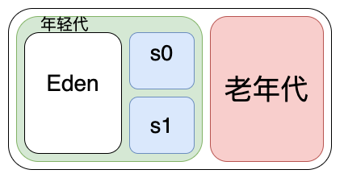

Java 垃圾回收机制
文章目录
前言
之前我们介绍了 JVM 运行时内存是怎么分配的，其中方法区和堆是线程共享的，这里的对象如果不需要使用了，需要释放掉。
但我们很少像 C/C++ 一样去自己管理，释放内存，这其中就要归功于 Java GC ，它在背后默默的工作着。
虽然 Java GC 在背后默默的工作着，但是我们一直都不了解它，今天来看看它是怎么工作的，这样出现问题了才有应对之法。
在 Java 中什么是垃圾
我们通常所说的垃圾指的是用不到的东西，或者说对于我们来说没有价值的东西，放在家里占用了空间，如果不扔掉，久而久之家里的地方就会越来越小。生活质量就会越来越差。
在 Java 中垃圾也是类似的意思，指的是那些不再需要使用的对象，如果不释放掉，那么剩余的内存就会越来越少，直到没有内存可以使用，便抛出异常。这样给用户的体验就非常差了。
怎么判断对象是垃圾
知道了什么是垃圾，那么我们人可以主观的判断一个物品是不是垃圾，但是程序是怎么知道一个对象是否用完了，应该把它当做垃圾进行回收？
可达性分析算法
在 Java 中使用一个叫 可达性分析 的算法来判断一个对象是否是垃圾。
可达性算法的依据是把所有的对象看成是一张图，从 GC Root 对象可以访问到的对象，认为它是还有使用的，如果不能访问到的那么认为这个对象已经使用完成，不会再使用了，应该把它当做垃圾回收掉。
其中 GC Root 可以由以下几种对象组成
- Class 系统加载的 class
- 方法中的局部变量引用的对象
- 静态变量引用的对象
- 活着的线程
- 本地方法变量引用的对象
怎么回收垃圾
知道了怎么判断一个对象是否为垃圾后，什么时候进行回收？好比小区里的垃圾车也只有每天早上和晚上才会过来收一次，不可能一直都在，这样太没效率了。
Java 中的垃圾回收就像真实回收垃圾一样，也在两种情况下会进行回收。
- 内存分配失败(Allocation Failure)的时候 在内存分配失败的时候，垃圾回收器会进行一次回收，看看回收之后的内存是否足够使用。这就像家里有很多用不到的东西，新买的东西没地方放了，所以我们就需要丢弃一些没用的东西。
- 主动调用回收API(System.gc) 生活中我们有些东西不想要了想要丢掉，出门的时候顺带把垃圾主动扔掉。
上面说的讲的是什么时候回收，接下里看具体是怎么回收的，都有哪些算法
标记清除算法
标记清除算法分为两个阶段
- 标记阶段：在这个阶段，虚拟机会遍历
GC Root把所有可以通过GC Root直接或间接访问的对象标记为存活对象，不可到达的对象标记为垃圾对象 - 清除阶段：在标记阶段结束后，将所有的垃圾对象进行清除。
标记清除算法实现简单，但是在执行过程中会停止其它线程(stop the word)，如果回收太频繁会影响用户体验。而且被回收的地方容易产生内存碎片。
标记清除算法之所以需要停止其它线程是以防一个新对象刚刚 new 出来，发现没有引用就被标记为垃圾了，使用的时候却发现是空指针。
复制算法
复制算法会将内存分为两块，每次只使用其中一块，另一块留着回收的时候把不是垃圾的对象复制进去，然后把使用中的内存清除。
这样的做法会导致有一半的内存被浪费。在没有对象要被回收都会复制一次。
复制算法的优点是实现简单，不会有内存碎片。
标记-压缩算法
标记-压缩算法和标记清除算法一样也存在两个阶段
- 标记阶段：在这个阶段和标记清除算法一样先对对象进行标记，区分出存活的对象和垃圾对象。
- 压缩阶段：这个阶段会把存活的对象压缩到内存的某一端，剩下的垃圾就会被清理了。
标记-压缩算法不会像标记-清除算法一样产生内存碎片，也不会有一半的空间被浪费，但是在压缩的过程中需要把对象移动到另一端，效率难免有所下降。
分代回收策略
现在全国各地都在进行垃圾分类，其实在 Java 中也是有对垃圾进行分类的，并不是所有的都垃圾扔到垃圾桶就行了。Java的分代回收策略就有点像垃圾分类。
JVM 会根据对象生命周期的长短，把堆内存分为新生代和老年代。具体的做法是新建的对象会放在老年代，这些对象经过15次 GC 后如果还没有被回收就会把这些对象放进老年代中。
年轻代
JVM 会把新建的对象放到老年代，新生代对象朝生夕死，一次回收就会70%~95%，回收率很高，一般采用复制算法。
年轻代还可以继续细分，如下图所示

年轻代分为 Eden 、 Survivor0 、 Survivor1 ，他们的比例为8:1:1。
新创建的对象首先分配在 Eden 中，第一次 GC 会把 Eden 中的存活对象复制到 Survivor0 并清空 Eden 。
第二次当 Eden 满的时候会把 Eden 、 Survivor0 中的存活对象复制到 Survivor1 中并清空 Eden 和 Survivor0 。如此反复15次对象都没有被回收的话，就会把对象转移到老年代中。
年轻代触发回收的时机是 Eden 区内存不足的时候，也就是 YGC ， 也叫 Minor GC
老年代
上小节我们说到一个对象在经历过15次GC后没有被回收会被放入老年代中，除此之外，一个对象如果较大，年轻代中放不下，会把这个对象直接放入老年代中。
放入老年代对象的大小可以通过 -XX:PretenureSizeThreshold 来控制，大于这个值会直接放进老年代中，老年代中的对象存活的比较长，一般采用标记-压缩算法。
老年代中还有一个 512 byte 的 card table ，用来存放老年代对年轻代的引用，这样当老年代有引用年轻代的时候就不需要遍历整个老年代，只要查表就可以了，这样大大提高了回收效率。
老年代回收的时机是老年代内存不足的时候，也就是 FGC ，也叫 Major GC ，老年代回收的时候也会把年轻代也回收。
总结
本次我们学习了 JVM 通过可达性分析对象是否为垃圾，以及回收垃圾的几种算法和分代回收策略。垃圾回收是影响并发性能的因之一，学会了可以在出现问题的时候更好的帮我们分析问题，进行优化。